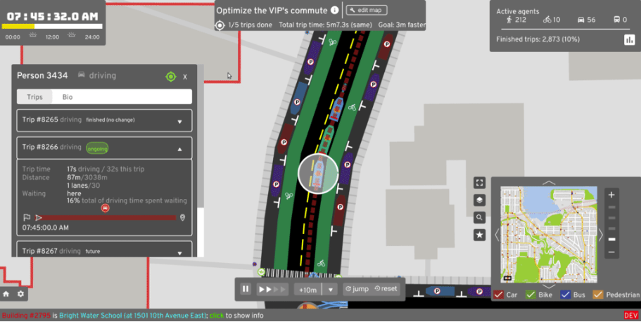
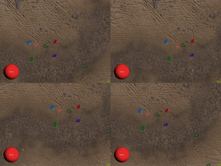
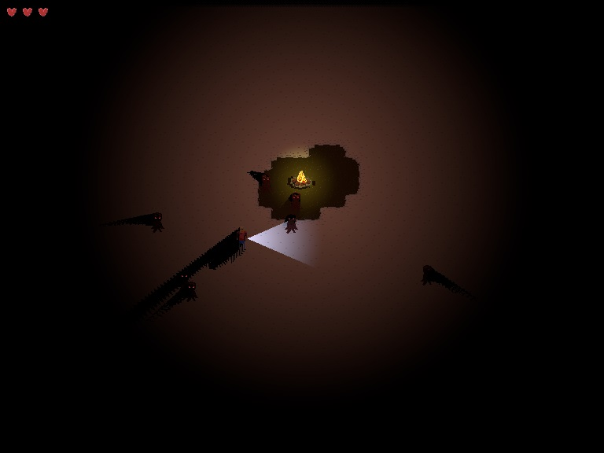
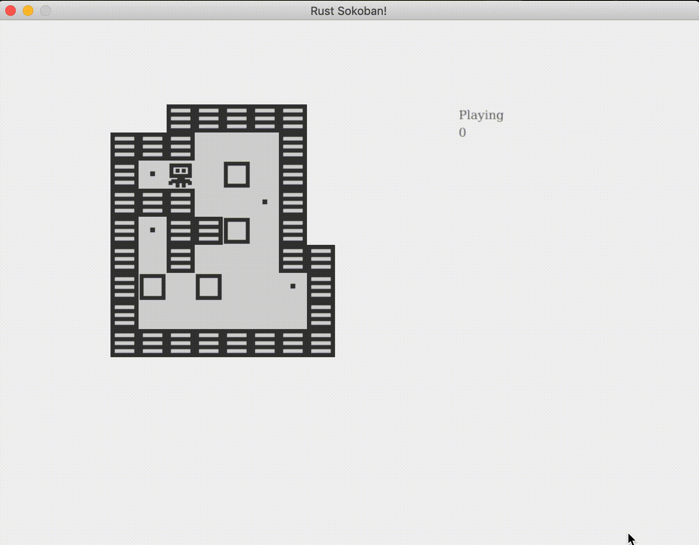
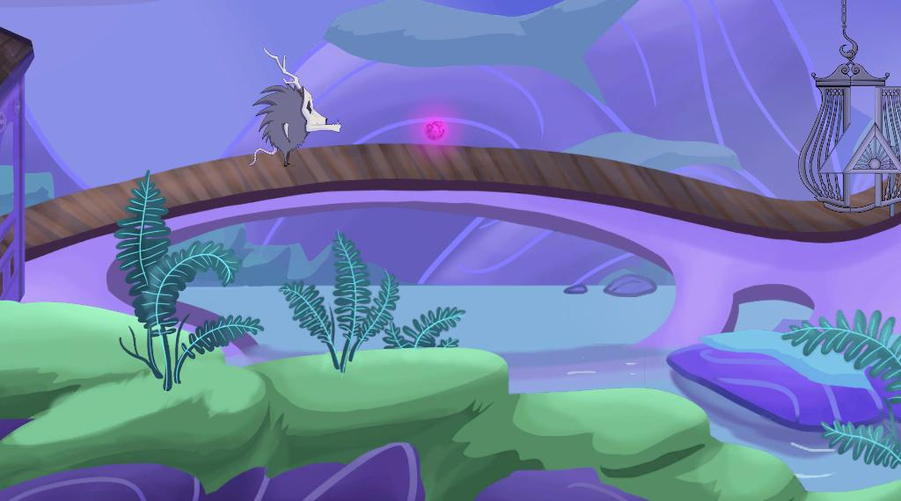
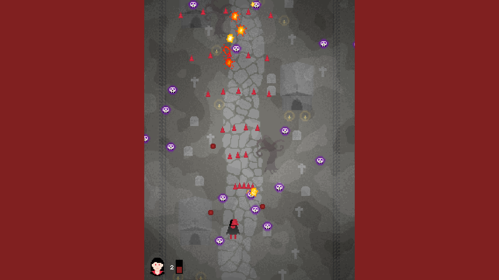
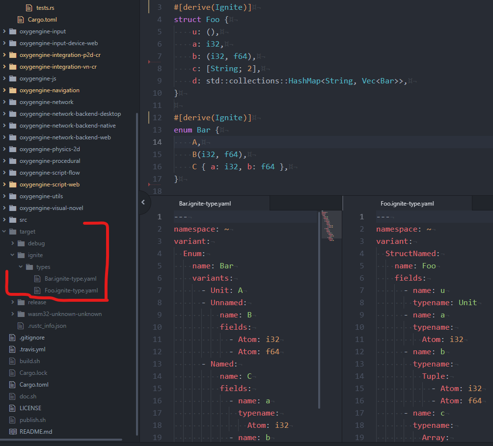
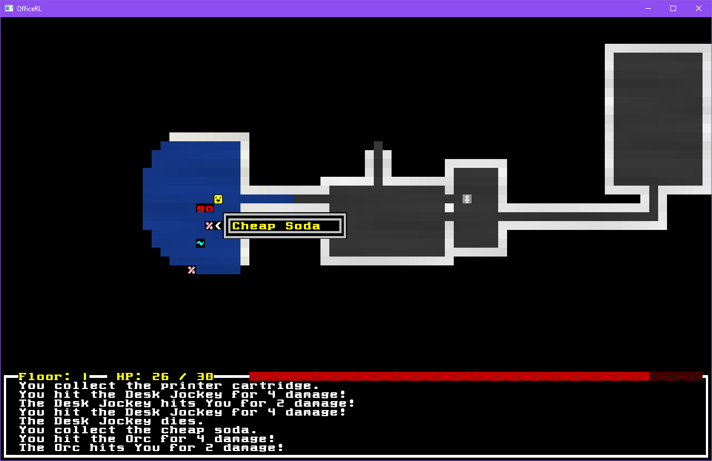

This Month in Rust GameDev #9 - April 2020
Welcome to the ninth issue of the Rust GameDev Workgroup’s monthly newsletter. Rust is a systems language pursuing the trifecta: safety, concurrency, and speed. These goals are well-aligned with game development. We hope to build an inviting ecosystem for anyone wishing to use Rust in their development process! Want to get involved? Join the Rust GameDev working group!
You can follow the newsletter creation process by watching the coordination issues. Want something mentioned in the next newsletter? Send us a pull request. Feel free to send PRs about your own projects!
London Virtual Talks (GameDev Special)

This month's London Rust meetup features three gamedev talks:
- "Rust GameDev WG" by @_AlexEne_ (slides)
- "Levelling up in Rust" by @oliviff (slides)
- "Scala to Rust: one game at a time" by @plippe (slides)
Here's a direct link to the recorded stream.
DUNGEONFOG is Hiring
DUNGEONFOG are developing editor tools for drawing and visualizing RPG tabletop maps. They're looking for a wgpu-rs developer for 2D graphics drawing.
You can find all of the details on their job offer page.
Game Updates
Crate Before Attack
"Crate Before Attack" by @koalefant is a multiplayer game where frogs combat their friends while navigating a landscape with their sticky tongue. It is a hybrid of a realtime and turn-based game.
The game can be played right in the browser (PC-only).
It is built for Web using miniquad and tokio crates and features:
- Swift roping (aka grappling hook);
- Diverse weapons;
- Local and online multiplayer;
- Procedural animation;
- Fun physics.
Check the devlog. It has three posts atm:
Also, there're a lot of dev videos on the game's YouTube channel.
A/B Street
A/B Street is a game by dabreegster exploring how small changes to road space and traffic signals affect the movement of drivers, cyclists, transit users, and pedestrians. The game models Seattle as accurately as possible using OpenStreetMap and other public datasets, lets the player adjust existing infrastructure, and then does a detailed comparison to see who the changes help and hurt.
First of all, a standalone 2D GUI crate was published extracted from A/BStreet's GUI code. It features fully vectorized text using lyon and supports lots of widgets such as "buttons (with keybindings), checkboxes, sliders, pop-up menus, text entry, and some data viz things". Thanks to its simplicity (everything is a colored polygon), this crate runs on many different architectures and even on the web via glow.
Here's an example of what it can do:

Dabreegster also uploaded a recorded version of their rust meetup talk about the inner working of abstreet.
In case anybody here is interested in more city simulation in Rust, the talk is about half project overview and half deep dive into code.
ABstreet had some great contributor work coming in, notably from omalaspinas who implemented an optional SEIR pandemic model into the game.
And for anyone interested in more frequent updates, the abstreet subreddit has had weekly update posts since September 2019.
Discussions: /r/rust
Citybound
Citybound is a city building game that uses microscopic models to vividly simulate the organism of a city arising from the interactions of millions of individuals.
It is developed by aeplay and uses a homemade actor system for everything called kay, you can see its power on this impressive tech demo.
In April, aeplay made two livestreams about conceptualizing pedestrians and pandemic models using feedback from the chat. You can watch the replay for the two livestreams on youtube: here and here.
Scale
Scale is a granular society simulation by Uriopass, with the objective of having fully autonomous agents interacting with their world in real time.
A devlog was published, explaining how pedestrians were added to the simulation, and that a new renderer based on wgpu-rs is in development. A short video was also posted together with the post for a more concise update.
Discussions: /r/rust_gamedev
For The Quest
For The Quest is the working title for a game in early development by @seratonik. Written entirely in Rust and compiled to WebAssembly, For The Quest is destined to become a MMORPG set in a post-apocalyptic Earth where your goal is to band together into like-minded factions to not only survive in this new world, but to unearth the cause of humanity's downfall.
For The Quest is currently undergoing engine development with a focus on running smoothly in modern browsers using WebGL 2.0 before moving onto native desktop ports.
New developments in April:
- Finished re-working and optimizing the rendering pipeline to allow for post-processing and other screen-space effects
- Planar reflections implemented, and work with an upgraded form of the specular maps to determine how reflective a surface is
- Add a flagging system so surfaces can identify their type to the shading system so effects can be selectively applied per pixel
- Used the new flagging system to identify water surfaces and make them "ripple" their reflections
- Updated the mapping/tile system to support "sunken" floor tiles, which allows for ponds, lakes, cliff edges, etc.
- Started work on plans for a streaming asset manager
- New desert/sand tileset models & textures (Thanks Mishayla!)
Follow @seratonik on Twitter for updates.
Akigi
new shadows
Akigi is a multiplayer online world where humans aren't the only intelligent animals.
Some of this months's updates:
Full devlogs: #061, #062, #063, #064.
Blobs'n'Bullets

@rhmoller started working on a retro twin-stick shooter "Blobs'n'Bullets". It uses WASM, web-sys, canvas and the gamepad-api and features a local 2-player coop.
Colony Genesis
Native Systems is working on "Colony Genesis" - an ant colony sandbox game with ASCII graphics. This month v0.1.3 and v0.1.4 versions were released. Some of the updates:
- Add controls to highlight all ants by behavior (SHIFT+select)
- Fix frame loop timer to prevent fast forwards
- Adds temperature diffusion and adjusts rates It should now be easier to maintain high enough temperatures over night and in lower soil layers for eggs to develop normally.
ssshmup
ssshmup by @mkhan45 is a small small shoot 'em up made with ggez and specs.
Discussions: /r/rust_gamedev
Robo Instructus
Alex Butler continues to polish their "Robo Instructus" puzzle game - 1.25, 1.26, and 1.27 versions were released: automatically follow execution when paused, bugfixes, dependency updates, and performance optimizations.
Also, Alex published a new crate supporting the rasterization of .otf lines and quad/cubic Bézier curves: ab_glyph_rasterizer. It's around 2-5x faster than the current rusttype .ttf rasterizer.
Amethyst Games
-
"Conquest" by @takeryo_eeic is a hexagonal tactic game. This month its model were updated and the UX was reworked to feel like moving chess pieces. Check out a new gameplay video:
-
Grumpy Visitors by @mvlabat is a top-down 2D co-op action/arcade game highly inspired by Evil Invasion. Two weeks ago the game received a few updates of UI and multiplayer.
Also, a short video was posted to twitter, showing the latest state of Grumpy Visitors: 
-
Boulder Dash remake by dpc - a new remake of an old classic.
-
Jérémy Thulliez shared their experience making 3 little games:
- A gameboy proof-of-concept (repository)
- Tetris (repository)
- Pong (blog post, repository)
-
Will by Azriel is a moddable 2.5D action / adventure game. This month's update includes preliminary support for WASM, with most effort directed in the underlying Amethyst library.
Check out the video to see online play between native and web clients.
-
Realm.One is an open-source MMO game written using the Amethyst game engine. Recently there has been some simple AI integrated into the game. This will cause monsters to chase and attack you!
Next up will be items and experience!
- "GameDev in Rust (Ep.2): Monsters and AI! (Part B)" - ECS-based design with Amethyst, networking and tiled 2d based design.
Ludum Dare 46 Games
Ludum Dare 46 was this month! The theme was "Keep it alive", and there was a bunch of cool games made in Rust! Here's a roundup of some of them:
-
"The Hum" by Hoichael, williwiderstand, and NoahRo (source code, itch.io):
Feed the bonfire. Keep it alive.
-
"The Last Ship" by FedorL (source code, itch.io, Twitter thread):
Carry humanity from dying planet into the bright future!
-
"Frog Rations" by healthire (source code, Twitter thread):
Keep the frog alive by eating flies, but beware of the snake!
-
"WOODS" by Feilkin (source code, itch.io):
Keep the flame alive in the darkness!

-
"Wonder" by Ian Kettlewell (source code, itch.io):
Keep alive a sense of wonder.
-
"Lighthouse Keeper" by dooskington (source code, itch.io):
Alone on a rock in the sea, your job is an important one. Keep the lighthouse safe and operational, and don’t lose your mind. The goal is to survive for 30 days. Unfinished.
-
"Fermi Paradox" by tversteeg (source code):
How come we don’t see any life from other planets? What does an intergalactic society need to do to survive? Fermi Paradox is a combination of the arcade games of yesteryear with some modern twists.
Veloren
Early procedural building generation
Veloren is an open world, open-source voxel RPG inspired by Dwarf Fortress and Cube World.
Lots of systems have been finished up in April to prepare for the launch of 0.6. Many improvements have been made to the combat systems. Basic world and civilization simulations have been implemented. Lots of new soundtracks have been added. The UI is being reworked. Experimental work is being done with migrating to wgpu, and the level of detail system is a lot closer to being merged. Villagers have been getting a lot of love as well, making the world feel more alive.
Here is the April changelog:
- Complete rewrite of the combat system into a state machine
- Abilities like Dash and Triplestrike
- Fireball explosions
- Many new armors and weapons to find in chests
- Fleshed out "attack" animation into alpha, beta and spin type attacks
- Fleshed out range attack into charging and shooting anims for staff/bow
- Added a silhouette for players when they are occluded
- Added transparency to the player when zooming in
- Added dragging and right-click to use functionality to inventory,
armor & hotbar slots
- Added basic world and civilisation simulation
- Added fields, crops and scarecrows, paths, bridges, procedural house generation
- Added lampposts, NPCs that spawn in towns, and simple dungeons
- Added sub-voxel noise effect
- Added waypoints next to dungeons
- Added non-uniform block heights
- Added a Level of Detail (LoD) system for terrain sprites and entities
- Villagers tools and clothing, cultists clothing
- You can start the game by pressing "enter" from the character selection menu
Early procedural building generation
You can read more about some specific topics from April:
The final touches of 0.6 are wrapping up. The team will meet once 0.6 is released to disucss what 0.7 will look like. See you next month!
April's full weekly devlogs: "This Week In Veloren...": #62, #63, #64, #65,
Library & Tooling Updates
Rust Sokoban Tutorial

Rust Sokoban tutorial is an online book aimed at Rust gamedev beginners which walks through making a simple Sokoban game using ECS, ggez and specs. It tries to teach the basics of architecting in ECS and basic Rust concepts through a hands-on approach. @oliviff is currently looking for a few people to beta test the tutorial before it goes live, if you've got a spare couple of hours and you'd like to contribute, send her a DM.
Multiple ECS in My Personal Game Project
@dasifefe shared their thoughs about using multiple ECSes in a project.
Measuring Build Timings with mathbench
@bitshifternz (author of glam) has written a blog post about comparing build times of some popular Rust gamedev math crates (including glam, cgmath, nalgebra, euclid, vek, pathfinder_geometry) using a mathbench-rs unit tests suit.
Tutorial on 3D Graphics, Rust, Vulkan, and ash
@hoj-senna started writing a new tutorial about ash and Vulkan in general: "Ashen Aetna". The current version has 20 chapters and covers basics of general 3d graphics and setting all the stuff you need to draw your first triangle with ash.
Discussions: /r/rust
Implementing a Linear Quadtree in Rust
@snorrwe has written a blog post about exploring an implementation of a linear quadtree and comparing it with a naive implementation of spacial data querying. All code mentioned in the post is available on GitHub.
Discussions: /r/rust
Simple 2D Camera System for Rust with GGEZ
@sylvain has written a tutorial about implementing a simple 2D camera on top of GGEZ.
Vis Arcana: Our Backend – Technology
Authors of Vis Arcana shared a blog post explaining why they've chosen Rust for their project's backend.
... Rust advertises as a very productive language in which most errors (apart from logical ones) are caught at the compilation stage. After more than a year of working with it, I must admit that it’s absolutely correct – new game modules are added extremely quickly, and the number of errors has dropped to practically zero. ...
Symmetric Matrices & Triangle Numbers
 The pink orb should not collide with the player, but it should collide with the ground.
Anthropic Studios has shared a post about implementing a layer system to "Way of Rhea"'s physics engine using symmetric matrices and triangle numbers.
turbulence and goggles
This month @kyren released two libraries: turbulence and goggles.
turbulence is the more interesting of the two, it is another attempt at a rust-based networking library for games. The main thing I think that sets it apart is that it is async while being totally reactor, executor, and platform agnostic. It is a library that just allows you to take a stream of unreliable, unordered packets and turn them into N independent unreliable, unordered or reliable, ordered streams of messages.
goggles is probably not as interesting, but it is an aggressively stripped down fork of specs / shred with more of the insides exposed. My favorite part about specs is how easy it is to use just the parts of it that you actually need, but I wanted to go further. For me, the functionality of specs that I needed was really just the entity allocator, a few storage types, MaskedStorage, and the Join system. goggles is just that: the bare minimum pieces that you need to assemble your own ECS system, as independent as I could make them.
Discussions: /r/rust_gamedev
μsfx - 0.1.3
μsfx is a small library built for generating sound effects in code during
runtime. μsfx can be integrated with the cpal and music crates as well as
SDL2 crate bindings.
Samples are available on μsfx's github readme and further documentation is avialable on the docs.rs page.
This latest version (0.1.3) provides fixes for saw, triangle, and square waves.
iced - v0.1
Iced is experimental, cross-platform GUI crate focused on simplicity and type safety. Iced can be used natively, in a web browser, or can use wgpu,
The new release includes:
- Styling based on trait implementations.
- Event subscriptions that take place asynchronously by using streams.
Canvaswidgets, for drawing 2D graphicsPaneGridwidgets, which can dynamically organize layout by splitting panes that can be resized.Svgwidgets, which can render vector graphics.ProgressBarwidgets- Integration into exisiting
wgpuprojects. - Options for integrating futures executors into a project.
- TextInput selection
- Texture Atlas support for
iced-wgpu
Full docuementation for Iced is available on the docs.rs page as well as examples and how to contribute are available on iced github repo
assets_manager - v0.2.2
assets_manager is a crate that provides convenient loading, caching, and reloading of external resources. The crate is pay-for-what-you-take, provides a high level API, and is concurrent.
This newest version provides for hot-reloading, directory-loading (being able to load from a single directory all at once, for extensible games), meta loaders, and various other improvements.
Examples and documentation are available on assets_manager's docs.rs and additional information about contributing are available on the github repository
gfx-rs and wgpu News
 hectic-rs - Rust/wgpu/specs re-write of hectic by @expenses
wgpu-0.5 release happened! See the changelog.
It's based on gfx-hal-0.5 (which was covered in the March newsletter),
uses in-house gfx-extras crates adopted from Rendy,
has many fixes and improvements, and totally changes the way passes are recorded.
wgpu project got restructured by only leaving wgpu-core and wgpu-types
in the main ("core logic") repository.
wgpu-native is moved out into a separate one.
wgpu-remote got fully moved into mozilla-central as "gfx/wgpu_bindings"
(this is "gfx" in a general sense, not gfx-rs in particular).
The Web target (aka "wasm32-unknown-unknown") is now officially supported
by wgpu-rs! 🎉
@grovesNL wrote the announcement to gfx-rs blog.
At the same time, @kvark was implementing support for WebGPU in Firefox
(Nightly only) with help of wgpu.
They published results of this milestone on Mozilla Hacks.
The combined efforts allowed all the wgpu-rs examples to be run
in Firefox Nightly on all platforms
(yes, even on Android, terms and conditions apply...).
Given the wide spectrum of uses for wgpu ("core"), it became most important
to be able to debug and reproduce visual issues, be it either the user's fault,
or wgpu implementations'.
To aid these scenarios, a new API tracing infrastructure
was built into the core.
It's now possible to replay user's wgpu workloads in a separate player
on an entirely different platform.
In gfx-rs land, @mistodon created a nice series of tutorials for the gfx-hal API.
Oxygengine
This month @PsichiX - creator of the Oxygengine game engine - made further progress with the Ignite game editor, a hub application for game making tools for Indie game developers.
-
Code editor and Media player:
-
Play Mode window to play and test your game directly in the editor:
-
Additionaly new procedural macro was introduced into Oxygengine, this macro allows to bake information about types that will tell Ignite how to edit data of this types:

There was an additional work done within Oxygengine ecosystem, which is Chrobry crate - data driven template engine which is used in Ignite as part of tool that allows to create new projects from templates provided by plugins imported into Ignite editor.
If you want to be up to date with Oxygengine ecosystem progress, make sure to follow project on GitHub and see Oxygengine Project board.
erupt
erupt provides bindings to the Vulkan API.
Features include:
- Full Vulkan API coverage
- First-class support for all extensions
- High quality auto-generated function wrappers
- A diverse
utilsmodule - Complete auto-generation of everything except
utils - Function loading
- A high level
Builderfor every struct - Type-safe pointer chain support
Just like ash, erupt focuses on exposing good bindings to the raw Vulkan API instead of providing manually written wrappers around it like Vulkano. On top of this it tries to improve on some features where ash lacks, e.g. auto-generation, extensions, documentation and utils.
For more information visit docs.rs and GitLab.
bracket-lib

bracket-lib is a toolkit for creating roguelikes in Rust. Version 0.8.0 of the library was released this month, adding many new features and fixes, such as:
- A new input system
- RGBA support, with conversions to RGB and HSV
- Support for bigger Unicode font maps
- A 'flexible' terminal with support for floating point positions
- A 'sprite' terminal that lets you render sprites wherever you want
- A 'virtual' terminal, sections of which can be rendered to other terminals
- Runtime font switching
- OpenGL hooks
- Framerate limiting
Full release notes are available on /r/rust.
The author of the library has also published a new tutorial, showing how you can use simplex noise to generate worlds [twitter thread].
In the wider community, DrMelon has published a alpha version of OfficeRL, a roguelike built with bracket-lib that's set in an eternally sprawling office complex.
miniquad

miniquad project got a logo
miniquad is a safe and cross-platform rendering library focused on portability and low-end platforms support.
This month miniquad-based games got a recommended way to make sounds:
quad-snd.
Here's a WASM demo (source).
good-web-game now uses quad-snd and can run ggez's "sounds" example: WASM demo.
macroquad
macroquad is minimalistic game framework on top of miniquad,
strongly inspired by raylib.
This month macroquad's rendering system got 2D custom cameras support:
example source.
Also, macroquad's UI system now support TTF fonts:
online demo, source.
Tetra
Tetra is a simple 2D game framework, inspired by XNA and Raylib. After a quiet few months, versions 0.3.3, 0.3.4 and 0.3.5 were all released over the course of April.
Highlights of this month's updates include:
- New integrations with the OS, such as file dropping and clipboard manipulation
- More utilities for working with mouse and keyboard input
- Enhancements to the animation API
- Various under-the-hood improvements and optimizations
Tetra's website has also had an overhaul, and is looking for contributions to the showcase section. If you're working on a project with Tetra, submit an issue or a PR to the website repo to get it added!
Dathos
Dathos is a simple, extendable 2D game engine built in Rust. It exposes a Ruby API for writing game/rendering logic, and a Rust API that allows you to build native extensions for those scripts.
@resinten, the author of the engine, has also published an example game called Melody Madness. Players submit commands via a Slack channel, trying to write a melody one note at a time.
Shipyard v0.4
Shipyard is an ECS library built on top of sparse sets.
Main changes:
- Systems are now functions
- Workloads can return errors
IteratorandIntoIteratorare supported
Amethyst

-
Early WASM support exists on the
wasmbranch.- Basic input, audio, and rendering support.
- Online play support through
WebSockets. - Includes OpenGL support for native applications.
-
amethyst_lyonby @cuberoo_ provides integration with thelyontessellation library.This is used as a renderer plugin.
-
MachineHum shared two videos on his game development ventures:
- Compiling Amethyst for the GameShell.
- Making Pokemon Gold.
This Month in Mun

Mun is a scripting language for gamedev focused on quick iteration times that is written in Rust.
The Mun Team posted a technical blog about how they implemented hot reloading of structs.
Their April updates include:
- hot reloading of structs;
- 128-bit integer support;
- improved literal support;
- complete operator support for fundamental types;
- improved documentation;
- bugfixes and improved test coverage.
Sarekt
Sarekt is a Vulkan-based renderer by Brandon Pollack.
The library has examples corresponding to the steps of vulkan-tutorial.com, which may be helpful if you want to compare its API with raw Vulkan code.
Discussions: /r/rust
Godot Ecosystem
- @hagsteel has written a beginner-friendly tutorial on how to get up and running with Godot and Rust. It's written with Linux in mind, but should be transferrible to other operating systems [/r/rust].
- @hagsteel has also written a blog post with their take on how to use the Legion ECS library with Rust and Godot [/r/rust].
- @schr3da has published a series of video tutorials on how Rust can be used
effectively with Godot:
- Basic Keyboard Controls - Part 1 and Part 2
- Debugging GDNative Scripts with LLDB
- File Watching with cargo-watch
- Creating a Simple Platformer - Part 1, Part 2 and Part 3
Meeting Minutes
See all meeting issues including full text notes or join the next meeting.
Requests for Contribution
- Beta-test the Rust Sokoban Tutorial;
- Embark's open issues (embark.rs);
- winit's "Good first issue" and “help wanted†issues;
- gfx-rs's "contributor-friendly" issues;
- wgpu's "help wanted" issues;
- luminance's "low hanging fruit" issues;
- ggez's "good first issue" issues;
- Veloren's "beginner" issues;
- Amethyst's "good first issue" issues;
- A/B Street's "good first issue" issues;
- Mun's "good first issue" issues;
Bonus
Just an interesting Rust gamedev link from the past. :)
 "dead end" by turnage, 2019
"dead end" by turnage, 2019
A few months ago a generative art library "valora" was released by @turnage. Features:
- Repeatable works at arbitrary resolutions without changing the work
- Managed rngs for repeatable works and controlled rng trees
- Support for using a different, custom GLSL shader for each vector path
- GLSL live coding with "#include" support
- An ergonomic derive-based GLSL uniforms interface
- Animation support for brainstorming and cumulative pieces
Check out the guide and gallery.
Discussions: /r/rust
That's all news for today, thanks for reading!
Subscribe to @rust_gamedev on Twitter or /r/rust_gamedev subreddit if you want to receive fresh news!